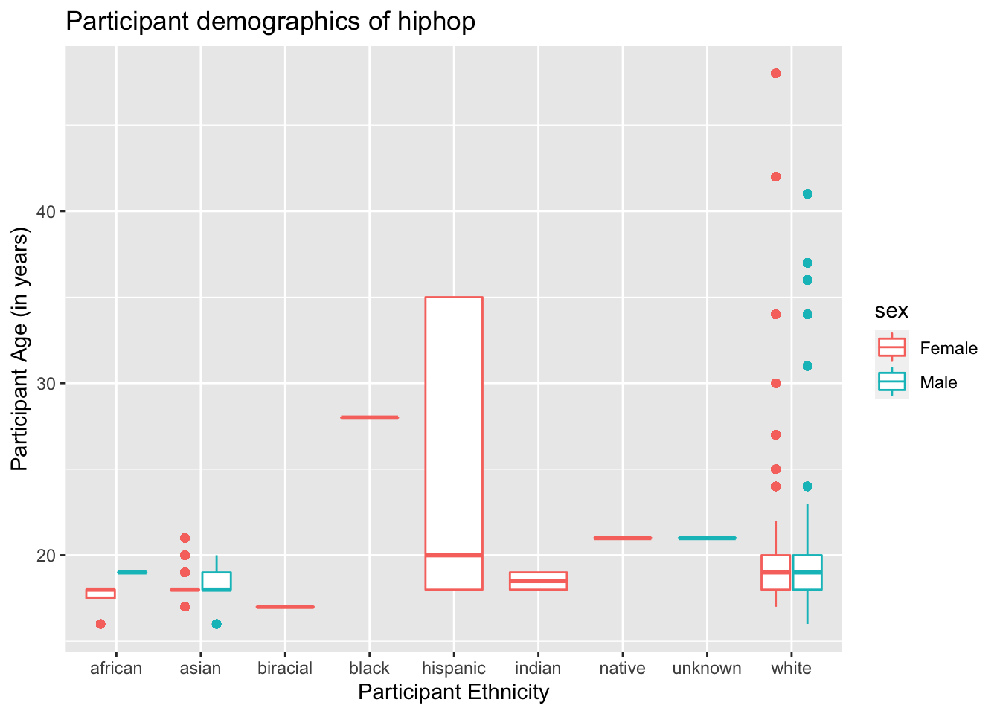
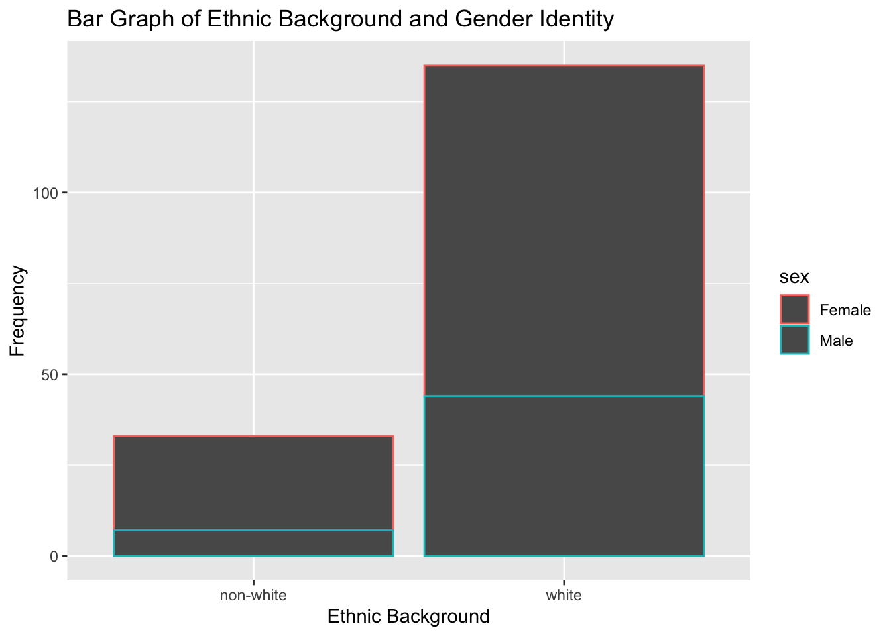

Here’s the code!
library(tidyverse)
library(here)library(tidyverse)
library(here)hiphop <- read_csv(here::here("supporting_artifacts",
"learning_targets_ev",
"Lab 3",
"hiphop.csv"))1) The data set hiphop contains 10,752 rows of data and 38 variables. These variables include participants’ identifier (i.e. person 1 = p1), sex, age, ethnicity, location, preferred music tastes, and their responses to certain pop-culture questions. 64 AAE terms were defined by each participant in this data set. This data was taken on 168 participants, who were undergraduate students at the University of Minnesota at the time this study was conducted.
Participant definitions were coded numerically on a scale of 1-5 in a variable familiarity: 1 representing that the participant does not know the definition of a given AAE term at all, and 5 representing that the participant knows the definition well. A binary version of this variable is also included in the data set, fam1, which codes familiarity ratings of 1 as a 0 and ratings 2-5 as a 1.
2) The rows are 1 AAE term, which corresponds to 1 person’s definition of that term. Each person was asked to define all 64 of these AAE terms, so there are 168 definitions for each of the 64 terms (168 x 64 = 10,752, the number of rows in this data set).
3) Missing values were replaced with mean values in this data set.
I think a drawback of using an average in replace of a missing value is that if there are many missing values, the true significance of any test may not be found because there wasn’t enough variation in the data to accurately achieve significant results.
A benefit is that having the mean as the value instead of NA allows for easier processing of the data because we don’t have to go in and purposefully exclude that missing data.
4) Cleaning the data set
hiphop_clean <- hiphop |>
mutate(
sex = as.factor(sex),
) |>
drop_na(ethnic, sex, age)5) 64 unique AAE words were studied in this data set.
hiphop |>
distinct(word, .keep_all = TRUE) |>
count()# A tibble: 1 × 1
n
<int>
1 646) Re-categorizing ethnic variable
hiphop_clean <- hiphop_clean |>
mutate(
white_or_not = if_else(ethnic != "white", "non-white", ethnic))7) What are the demographics of the people in this study?
#general demographics of each person
hiphop_clean |>
select(subj, ethnic, sex, age, white_or_not) |>
distinct(subj, .keep_all = TRUE)|>
count(across(c(ethnic, sex, age)))# A tibble: 47 × 4
ethnic sex age n
<chr> <fct> <dbl> <int>
1 african Female 16 1
2 african Female 18 3
3 african Male 19 1
4 asian Female 17 2
5 asian Female 18 9
6 asian Female 19 1
7 asian Female 20 1
8 asian Female 21 1
9 asian Male 16 1
10 asian Male 18 2
# … with 37 more rows#gender specific demographic
hiphop_clean |>
select(subj, ethnic, sex, age, white_or_not) |>
distinct(subj, .keep_all = TRUE)|>
count(sex)# A tibble: 2 × 2
sex n
<fct> <int>
1 Female 117
2 Male 51#ethnic specific demographic
hiphop_clean |>
select(subj, ethnic, sex, age, white_or_not) |>
distinct(subj, .keep_all = TRUE)|>
count(ethnic)# A tibble: 9 × 2
ethnic n
<chr> <int>
1 african 5
2 asian 19
3 biracial 1
4 black 1
5 hispanic 3
6 indian 2
7 native 1
8 unknown 1
9 white 135#age specific demographic
hiphop_clean |>
select(subj, ethnic, sex, age, white_or_not) |>
distinct(subj, .keep_all = TRUE)|>
summarize(
under_20 = sum(age < 20),
btwn_20_and_30 = sum(age %in% 20:30),
over_30 = sum(age > 30)
)# A tibble: 1 × 3
under_20 btwn_20_and_30 over_30
<int> <int> <int>
1 118 41 9Of the 168 subjects in this study, 117 are female and 51 are male. This sample’s ethnic composition was about 80.4% white, 11.3% Asian, 3.0% African, 1.8% Hispanic, 1.2% Indian, 0.6% biracial, 0.6% black, 0.6% native and 0.6% unknown. Approximately 70.2% of the participants at the time of the study were under 20 years old, 24.4% were 20-30 years old, and 5.4% were over 30 years old.
8) Plots!
hiphop |>
ggplot(mapping = aes(x = ethnic,
y = age,
color = sex)) +
geom_boxplot() +
labs(title = "Participant demographics of hiphop",
x = "Participant Ethnicity",
y = "Participant Age (in years)")
hiphop_clean |>
distinct(subj, .keep_all = TRUE)|>
ggplot(mapping = aes(x = white_or_not, color = sex)) +
geom_bar() +
labs(x = "Ethnic Background",
y = "Frequency",
title = "Bar Graph of Ethnic Background and Gender Identity")

a.
# People under 20
# finding most familiar word
hiphop_clean |>
filter(age < 20) |>
select(familiarity, word) |>
group_by(word) |>
summarize(avg_familiarity = mean(familiarity)) |>
slice_max(order_by = avg_familiarity)# A tibble: 1 × 2
word avg_familiarity
<chr> <dbl>
1 off the hook 4.42# finding least familiar words
hiphop_clean |>
filter(age < 20) |>
select(familiarity, word) |>
group_by(word) |>
summarize(avg_familiarity = mean(familiarity)) |>
slice_min(order_by = avg_familiarity)# A tibble: 1 × 2
word avg_familiarity
<chr> <dbl>
1 catch the vapors 1.03For people under the age of 20, the most familiar phrase on average was “off the hook” — with a mean familiarity rating of about 4.424. The least familiar phrase among this subset of participants is “catch the vapor”; the mean familiarity rating for this phrase was about 1.025.
b.
# Non-white Women
# finding most familiar word
hiphop_clean |>
filter(white_or_not == "non-white", sex == "Female") |>
select(familiarity, word) |>
group_by(word) |>
summarize(avg_familiarity = mean(familiarity)) |>
slice_max(order_by = avg_familiarity)# A tibble: 1 × 2
word avg_familiarity
<chr> <dbl>
1 feel me 4.19# finding least familiar words
hiphop_clean |>
filter(white_or_not == "non-white", sex == "Female") |>
select(familiarity, word) |>
group_by(word) |>
summarize(avg_familiarity = mean(familiarity)) |>
slice_min(order_by = avg_familiarity)# A tibble: 4 × 2
word avg_familiarity
<chr> <dbl>
1 break someone out 1
2 dukey rope 1
3 plex 1
4 rollie 1For non-white women in this study, the most familiar phrase on average was “feel me” — with a mean familiarity rating of about 4.192. The least familiar phrases among this subset of participants were “break someone out,” “dukey rope,” “plex,” and “rollie”; the mean familiarity rating for these were all 1.
c.
# White men over 30
# finding most familiar words
hiphop_clean |>
filter(white_or_not == "white", sex == "Male", age > 30) |>
select(familiarity, word) |>
group_by(word) |>
summarize(avg_familiarity = mean(familiarity)) |>
slice_max(order_by = avg_familiarity)# A tibble: 1 × 2
word avg_familiarity
<chr> <dbl>
1 5-0 4.2# finding least familiar words
hiphop_clean |>
filter(white_or_not == "white", sex == "Male", age > 30) |>
select(familiarity, word) |>
group_by(word) |>
summarize(avg_familiarity = mean(familiarity)) |>
arrange(avg_familiarity) |>
slice_min(order_by = avg_familiarity)# A tibble: 25 × 2
word avg_familiarity
<chr> <dbl>
1 ay yo trip 1
2 beezy 1
3 break someone out 1
4 catch the vapors 1
5 crossroads 1
6 crump 1
7 dap 1
8 dollar cab 1
9 domino 1
10 duckets 1
# … with 15 more rowsAmong the white men over the age of 30 in this study, the most familiar phrase on average was “5-0” — with a mean familiarity rating of 4.2. The least familiar phrases among this subset of participants were:
These 20 words each had the lowest familiarity rating average of 1, of this specific subset of participants.
# resource:https://stackoverflow.com/questions/51107901/how-do-i-filter-a-range-of-numbers-in-r
hiphop |>
distinct(subj, .keep_all = TRUE) |>
select(subj, city, age, ethnic, sex, bieber) |>
filter(
city %in% 10000:60000,
age %in% 17:23,
ethnic == "white",
sex == "Male") |>
slice_max(order_by = bieber)# A tibble: 1 × 6
subj city age ethnic sex bieber
<chr> <dbl> <dbl> <chr> <chr> <dbl>
1 p17 56377 18 white Male 5I believe that person 17 is secretly Justin Bieber!